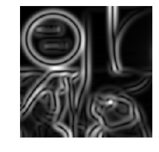

The methods to obtain the 1st and 2nd order derivatives of an image
Gradient
In the differential framework, the image I is considered as a differentiable function from $\cal R^2$ to $\cal R$
$$
f: \cal R^2 \rightarrow R
$$
Then we can get the first order partial derivatives shown as below.
$$
\nabla f =\left[ \begin{array}{ccc} \frac{\partial f}{\partial x} \\ \frac{\partial f}{\partial y} \end{array} \right ]
$$
We should utilize some kernels ( prewitt, sobel, gaussian…)to calculate the derivative of an image.
Gaussian
We majorly utilize the gaussian method to calculate the derivative of an image. The main idea of this method can be described as the formula shown below. Where $\star$ means the convolution and $G_\sigma$ means the 2-dimensions Gaussian function of standard deviation $\sigma$
$$
I^\sigma_{x^iy^j} = I \star \frac{\partial^{i+j}G_\sigma}{\partial x^i \partial y^j}
$$
The derivatives of 2-dimension Gaussian function is shown below:
$$
G(x,y,\sigma) = \frac{1}{2\pi\sigma^2}e^{-\frac{x^2+y^2}{2\sigma^2}}\\
G_x(x,y,\sigma)=-\frac{x}{\sigma^2}G(x,y,\sigma)\\
G_{xx}(x,y,\sigma)=\frac{x-\sigma^2}{\sigma^4}G(x,y,\sigma)\\
G_{xy}(x,y,\sigma)=\frac{xy}{\sigma^4}G(x,y,\sigma)
$$
Results

$$
H_f = \begin{bmatrix} \frac{\partial ^2f}{\partial x^2} & \frac{\partial ^2f}{\partial x \partial y}\\\frac{\partial^2 f}{\partial x \partial y} &\frac{\partial ^2f}{\partial y^2}\end{bmatrix}
$$